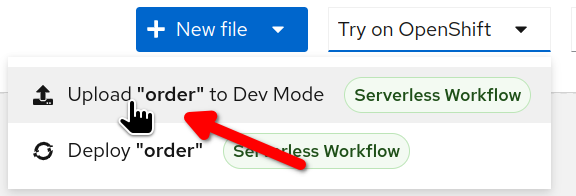
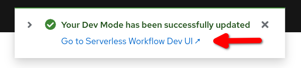

Compensation
Sometimes the unexpected happens: for example, a customer changes his mind and wants to cancel an order or the stock are running low. Actually, in real world: the change is the only constant!
Workflow developers start defining the happy path, then they have to deal with unexpected results (out of stock, order cancellation events, etc). A workflow could define a long chain of activities and under certain conditions, it might be necessary to define an exit strategy: warning all parties involved that they must undo what has been done before.
When you have short running transactions (during milliseconds), you could aspire to the convenient atomic transaction, but as long as your tasks span over multiple systems this option brings so many drawbacks which make it unrealistic, especially when they run in a cloud context. In fact, in the microservices architecture, the Saga Pattern is a well know practice when dealing with a cancellation.
When you deal with long running transactions, as known as business transactions, that spans of over minutes, hours or days, the only option available is to revert what was done previously, this could have consequences: for example, Hotels usually applies a cancellation fee when the cancellation is too near to the reservation day.
A workflow might involve multiple logical steps, there are conditional paths that depends on specific instance data. When the business logic requires a cancellation of the workflow instance, you need to reverse the flow of actions, undoing what was previously done. In the workflow nomenclature, this capability is called Compensation.
The good news is that the Serverless Workflow engine helps you in this difficult situations! In fact, the workflow developer can define for each action a compensation action that will only be invoked if necessary. Behind the scenes, the workflow engine, when an action is completed, records the corresponding compensation action in a stack. If the workflow subsequently encounters conditions that require compensation, only then does the engine retrace the stack of compensation activities to close everything correctly.
In short, Serverless Workflow Compensation is very handy whenever dealing with cancellation!
Cancelling Event Sprint
In our use case, we have to deal with situations where customers have to cancel their orders. Specifically, if the cancellation event arrives before the shipping one, it is necessary to call for compensation: the concrete compensation action depends on the previous execution path, if the item was available, the compensation action will call the internal shipping department otherwise the compensation action will deal with the external supplier.
The following picture shows an high level design:
| Given the simplistic nature of the example, one might consider replacing compensation with a gateway followed by compensatory actions. However, it should be borne in mind that in an even slightly more complex flow, implementing compensation in imperative mode would make the implementation complex and error prone. |
Below, we will add the definition of the new event type CancelEventType and a forking that distinguishes between the two possible input events:
-
shippingEvent -
cancelEvent
Open the workflow designer:
-
Inside the event section add the
cancelEventdeclaration:- name: cancelEvent kind: consumed type: CancelEventType source: Client correlation: - contextAttributeName: orderid -
In the state section, locate the
Order Shippedevent state and overwrite it with the following snippet:- name: Order Shipped or Cancelled type: event exclusive: true onEvents: - eventRefs: - shippingEvent - eventRefs: - cancelEvent eventDataFilter: data: '{cancel:true}' transition: Is Shipped?The new event state definition is able to listen for two different events. At the cancellation event, we can see the statement
eventDataFilterthe effect of which is to introduce a new Boolean data:cancel:true. In such a way, we will later be able to know which event has arrived. -
Since the event state has a new name, you have to update the states
Prepare for ShippingandForward to External Supplierto point to it.-
Search and update the corresponding transition declarations in this way:
transition: Order Shipped or Cancelled.
-
-
Add the following switch state after the
Order Shipped or Cancelledstate:- name: Is Shipped? type: switch dataConditions: - name: order cancelled condition: .cancel == true transition: Compensate Order defaultCondition: transition: Notify Customer -
After the previous state, Add an operation to handle the cancel event:
- name: Compensate Order type: operation actions: - name: printAction functionRef: refName: printMessage arguments: message: '"Compensate Order"' end: terminate: true compensate: true -
Locate the
Notify Customeroperation state and adjust theendproperty in this way:end: terminate: trueThis measure forces the workflow termination.
The following picture shows the result of the above procedure on the workflow diagram:
Test the cancelling event
In this section, we are going to test that the workflow is able to resume the execution when two types of CloudEvents arrives:
-
ShippingEventType -
CancelEventType
Deploy the workflow latest updates:
-
Select
Try on OpenShiftbutton and thenUpload "order" to Dev Mode. -
Wait for the confirmation message and select
Go to Serverless Workflow Dev UI ↗to open the Dev UI in a new browser tab.
Start a new workflow instance:
-
Open the
Workflow Definitionspage. -
In workflow list, click on the event icon:
-
Fill in the form with the following values:
-
Event Type :
OrderEventType -
Event Custom Headers :
ce-orderid = 1002 -
Event Data :
{"orderId": "1002", "item": "1111"}
-
-
Click
Trigger
Repeat the previous step to start a second workflow instance with ce-orderid = 1003.
Inject other two CloudEvents:
-
First event will test the happy path:
-
Event Type :
ShippingEventType -
Event Custom Headers :
ce-orderid = 1002
-
-
Second event will test the cancellation path:
-
Event Type :
CancelEventType -
Event Custom Headers :
ce-orderid = 1003
-
Even if you trigger the compensation no compensation activity is defined, so at this stage of the exercise you can only look for the Compensate Order string in the logs.
|
Compensation Activities Sprint
In this section, you will add two compensation activities for Prepare for Shipping and Forward to External Supplier.
Afterward, you will check that the runtime will call them when compensation is triggered by the cancel event.
Compensation activities are operation states, they could be placed anywhere in the state array. However, we suggest to place the definition nearby the corresponding primary state so it’s easier to orientate.
|
-
Locate
Prepare for Shippingand append right afterward:- name: Restore Inventory type: operation usedForCompensation: true actions: - name: printAction functionRef: refName: printMessage arguments: message: Restore Inventory -
Inside
Prepare for Shippingappend the following property:compensatedBy: Restore InventoryIn the workflow diagram you should see the two states linked by a yellow dotted line:
-
Locate
Forward to External Supplierand append right afterward:- name: Cancel Supplier Order type: operation usedForCompensation: true actions: - name: cancelOrder functionRef: refName: cancelOrder arguments: supplier-id: sup-01 content: '.orderId' -
Inside
Forward to External Supplieradd the following property:compensatedBy: Cancel Supplier Order
In the workflow diagram you should see the following situation:

Testing the compensation
Compensation comes in action when the workflow instance receives the cancel event: repeat the test procedure above.
In the workflow details page, you can see that the corresponding compensation state is triggered as shown in the following picture:
CONGRATULATION!!! Your Serverless Workflow compensates wisely!